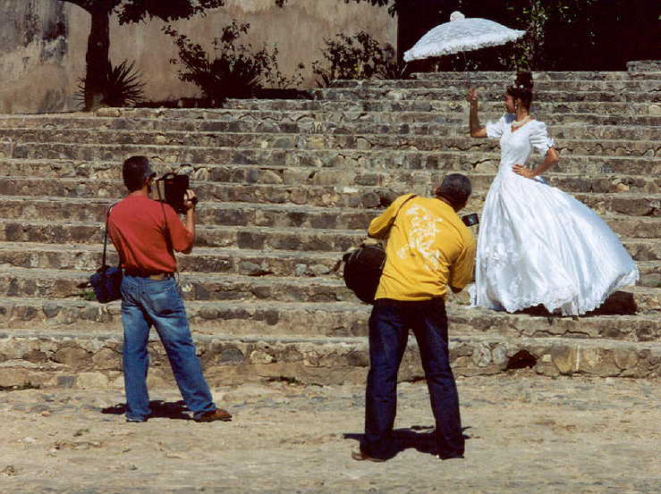
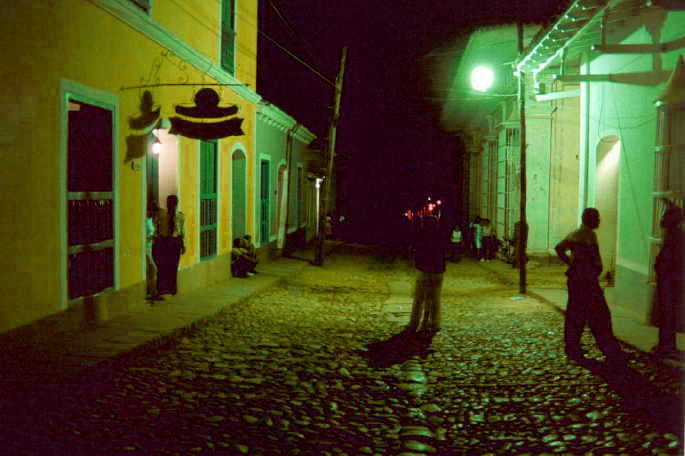
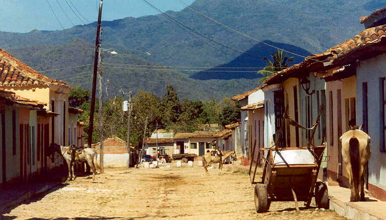
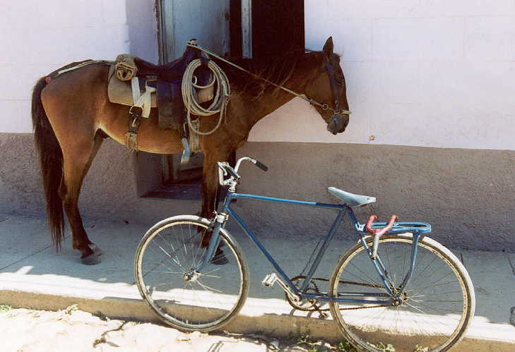
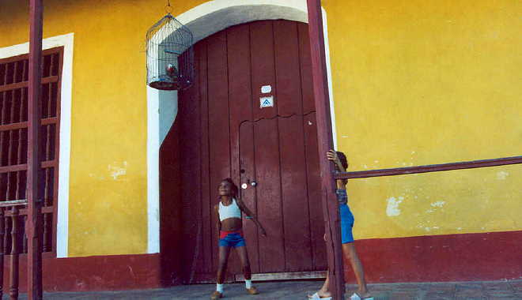

Trinidad, Cuba 2004
(All photos copyrighted by Richard Smith. Non-commercial use ok with approval and attribution.)
|
Trinidad
5
|

At the age of 15, young
Cuban girls are treated royally, with parties, photos, and much recognition.
This is known as the "quinces."

Night-time Trinidad. Like
in much of Cuba, the evening is a good time to sit outside and talk.

Trinidad's "Western"
section, where horses are tied to the front of houses.

There is a lot to be said
in support of this lifestyle. I know many people who would gladly trade residences.

Many people in Trinidad
keep birds as pets. You hear a lot of birdsong when you walk around the town.
|
Trinidad
5
|
Photo
pages sponsored by www.jewishcuba.org